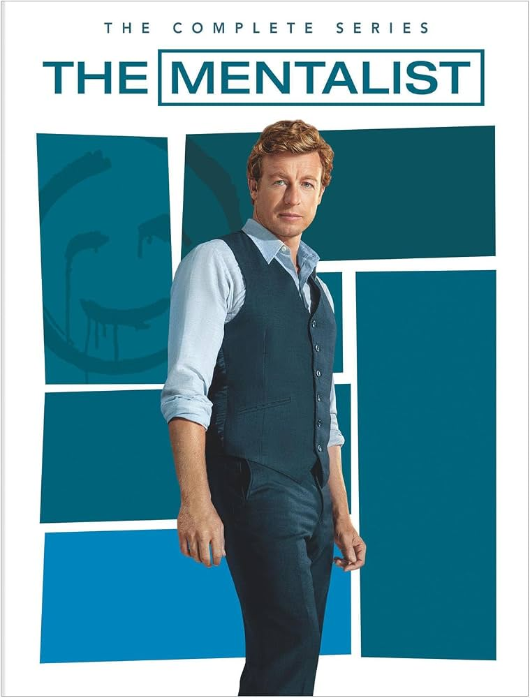

|
El mentalista (The Mentalist) es una serie de drama policial y misterio transmitida
entre 2008 y 2015, protagonizada por Simon Baker en el papel de Patrick Jane. |
 |
| Temporada | Episodios | Emisión original | |
|---|---|---|---|
| Primera emisión | Última emisión | ||
| 1 | 23 | septiembre de 2008 | mayo de 2009 |
| 2 | 23 | septiembre de 2009 | mayo de 2010 |
| 3 | 24 | septiembre de 2010 | mayo de 2011 |
| 4 | 24 | septiembre de 2011 | mayo de 2012 |
| 5 | 22 | 30 de septiembre de 2012 | mayo de 2013 |
| 6 | 22 | septiembre de 2013 | mayo de 2014 |
| 7 | 13 | noviembre de 2014 | 18 de febrero de 2015 |
Personajes principales
- Patrick Jane (Simon Baker): Ex psíquico fraudulento con excepcionales habilidades de observación y deducción que trabaja como consultor del CBI.
- Teresa Lisbon (Robin Tunney): Agente sénior a cargo del equipo en el CBI; metódica y el ancla moral para las trampas de Jane.
- Kimball Cho (Tim Kang): Agente estoico, directo y reservado, destacado por su sarcasmo seco y destreza en interrogatorios.
- Wayne Rigsby (Owain Yeoman): Especialista en incendios provocados e investigación de campo, de carácter leal y protector.
- Grace Van Pelt (Amanda Righetti): Especialista en informática y análisis de bases de datos; contraste de fe frente al escepticismo del grupo.
- Red John (John el Rojo): El asesino en serie némesis de Jane y líder de una red criminal encubierta dentro de las agencias de la ley.